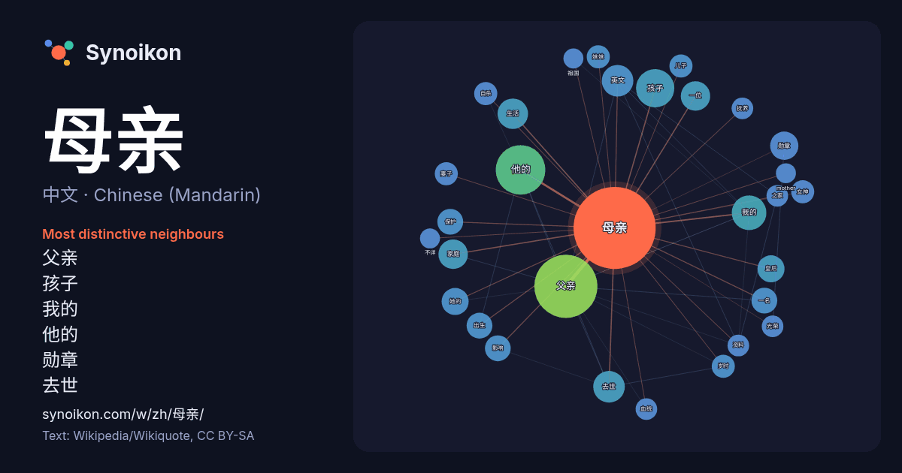

中文 · Chinese (Mandarin) · word of the day list
母亲
“mother” · The words found around it in 679 instances from Chinese (Mandarin) Wikipedia, Wikiquote.

Most distinctive neighbours
- 父亲 48×
- 孩子 17×
- 我的 16×
- 他的 13×
- 勋章 12×
- 去世 12×
- 英文 11×
- 皇后 10×
- 家庭 10.0×
- 一位 8.5×
- 岁时 8.5×
- 自杀 8.5×
- 女神 8.3×
- 出生 8.1×
- 妹妹 8.0×
- 光荣 7.9×
- 保护 7.9×
- 抚养 7.9×
- 血统 7.8×
- 生活 7.7×
× = how many times more often than in general Chinese (Mandarin) Wikipedia text.
Most frequent neighbours
- 父亲 60
- 他的 37
- 孩子 22
- 我的 18
- 去世 15
- 英文 15
- 生活 14
- 一位 13
- 家庭 13
- 勋章 12
- 她的 11
- 皇后 11
- 一名 10
- 保护 10
- 出生 10
- 影响 10
- 中国 8
- 儿子 8
- 女神 8
- 妹妹 8
In context
- 《母亲，母亲》，2012年中国大陆播出的战争剧，讲述了中国抗日战争和第二次国共内战背景下小家庭经受战火洗礼的故事，主演是斯琴高娃、袁立、胡亚捷、石天琦。 抗日战争爆发，金国秀的父亲犯了事，为了营救自己的父亲，她嫁给重慶桐油商人之子侯志宏。婚後，金國秀憑藉聰慧機智以及賢慧能幹，迅速獲得婆婆的信任。並多次將商號及家庭危機化險 … Wikipedia snippets · 母亲，母亲
- 天安门母亲运动是由六四事件遇害者家属组成的维权团体及其相关活动，主要發起者为六四事件死者蒋捷连之母、中国人民大学前哲学系副教授丁子霖，約始於2000年初。 该运动旨在促使中国共产党平反六四事件，徹查及公布六四事件的真实死亡人数，并向死傷者家屬公開道歉。其活动常受到中共当局的阻挠，例如禁止公開悼念在六四事件中遇害的親人等。 Wikipedia snippets · 天安门母亲运动
- 全家皆為乒乓球選手，其父母来自中国四川，父亲張本宇（原名張宇）曾效力于四川省队，母亲張本凌（原名張凌）曾为中国国家队队员，参加过1995年世界乒乓球錦標賽。他与父亲和妹妹張本美和（原名張美和）于2013年申请归化日本，2014年同获日本国籍并改姓为张本，母亲于2021年也改姓张本。 Wikipedia snippets · 張本智和
- 《平行母亲》（西班牙語：Madres paralelas）是2021年西班牙剧情片，由佩德罗·阿尔莫多瓦尔执导兼编剧，佩内洛普·克鲁兹、米莱娜·斯密特（西班牙语：Milena Smit）、伊斯雷尔·埃莱哈尔德（西班牙语：Israel Elejalde）、艾塔娜·桑切斯-希洪、朱丽叶·塞拉诺（英语：Julieta Wikipedia snippets · 平行母亲
- 《戈壁母亲》是沈好放指导，刘佳等人出演的一部电视剧，该剧主要讲述的是一位母亲因为寻找丈夫而来到了新疆，然后她在那里把自己的孩子培养成了军人的故事。该剧在2007年上映。该剧获得27届飞天奖中的优秀音乐奖 中国解放后，一位母亲带着自己的孩子来到了新疆去找丈夫，并且在寻找丈夫的时候遇到了一个孤女，于是她收养了这个女孩。 Wikipedia snippets · 戈壁母亲
- 铁链女事件（又称：锁链女事件、丰县八孩母亲事件、徐州八孩母親事件）是2022年1月曝光的妇女被虐待、多次拐卖案件及一系列后续风波，事发于中国江苏省丰县欢口镇。一名据称生育八个孩子的精神异常且被囚禁的女子的视频被传播至网络，并随着多路调查者对真相的揭露，该事件最终引发了巨大的舆论争议。事发后至2月上 Wikipedia snippets · 丰县生育八孩女子事件
- 《母亲的本能》（英語：Mothers' Instinct）是2024年上映的美国心理惊悚片，为法国电影摄影师伯努瓦·德洛姆（英语：Benoît Delhomme）导演的第一部作品，由杰西卡·查斯坦、安妮·海瑟薇、喬西·查爾斯和安德斯·丹尼爾森·李主演，改编自比利时作家芭芭拉·阿贝尔（法语：Barbara Wikipedia snippets · 母亲的直觉
- 祖国母亲在召唤（俄語：Родина-мать зовёт）是一座為紀念斯大林格勒战役而設立的雕像，位在俄羅斯伏尔加格勒馬馬耶夫山上。是由雕塑家叶夫根尼·武切季奇及結構工程家尼古拉·尼基金（英语：Nikolai Nikitin）所設計。於1967年完工，是當時最高的雕像。 Wikipedia snippets · 祖国母亲在召唤
More Chinese (Mandarin) words
Precomputed on 2026-10-09 with default settings (±5 words, medium corpus). The interactive map can refresh it with live data.